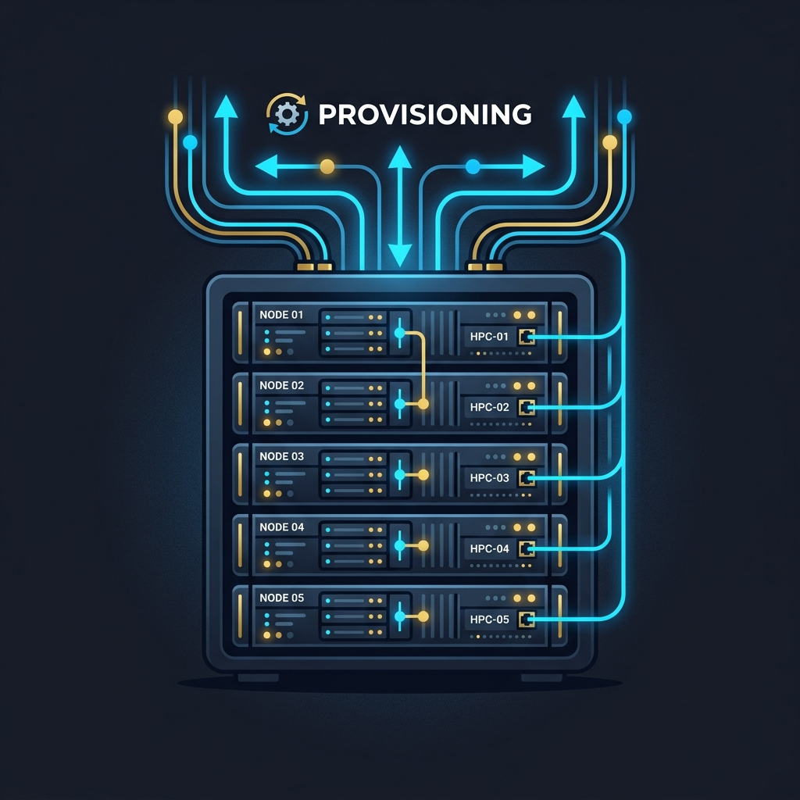
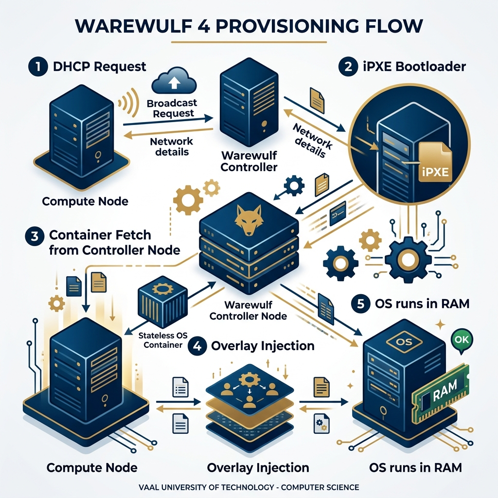

Node Provisioning with Warewulf 4
HPC & Cluster ComputingCourse: Operating Systems 4 (HPC)
Module: EIOSY4A
Topic: Node Provisioning with Warewulf 4
Reading Time: ~15 Minutes
Overview
In Week 2, we manually configured the essential services (DHCP, TFTP) required to boot a single machine over the network. While educational, manual configuration does not scale to clusters with hundreds or thousands of nodes. This week, we introduce Warewulf 4, a modern cluster provisioning system that automates the deployment and management of operating systems across large-scale infrastructure.
Unlike traditional management tools that rely on installing an OS into a hard drive (Stateful), Warewulf specializes in Stateless Provisioning, where nodes boot a lightweight, pre-configured operating system directly into RAM. Warewulf 4 represents a significant architectural shift from its predecessors by adopting the OCI (Open Container Initiative) standard, allowing administrators to manage compute node images using standard tools like Docker or Podman.
Note: This module focuses on applied provisioning of on-premise HPC clusters typical of institutional and enterprise environments, rather than hyperscale or exascale systems.
By the end of this week, you should be able to:
1. Evaluate the benefits and architectural implications of stateless provisioning in enterprise HPC clusters.
2. Analyze Warewulf 4's architecture and its integration with OCI-standard containers.
3. Deploy and configure complex nodes, profiles, and overlays using the wwctl command-line tool.
4. Design dynamic, per-node customizations of generic container images using system overlays.
Welcome to Week 3! Up to this point, we've looked at concepts and manually tinkered with DHCP. This week, things get real. We're introducing Warewulf 4, the industry standard tool for taking a single OS image and firing it across a network to hundreds of compute nodes simultaneously. Get ready to build a true cluster!
Assessment Alignment: The weekly quiz and practical assignments for this module specifically evaluate the Learning Outcomes listed below, verifying your ability to operate at an NQF Level 7 standard of analysis and synthesis.
1. The Provisioning Problem (Sterling Chapter 5 Extension)
Managing a high-performance cluster presents a unique system administration challenge: Scale. Installing an operating system on one server is a trivial task; installing, patching, and maintaining consistent configurations across 500 servers is a massive logistical burden. If a cluster administrator had to physically insert a USB drive or manually run an installer on every node, the cluster would never be operational.
Furthermore, consistency is paramount. In an HPC cluster, every Compute Node must be mathematically identical. If Node 01 has libmath-v1.2 and Node 02 has libmath-v1.3, a parallel simulation running across both might produce nondeterministic or erroneous results. We require a mechanism that ensures every node runs the exact same software stack, bit-for-bit, every time it boots.
1.1 Power Management (IPMI)
Before a node can be provisioned, it must be powered on. In a data center, sending a technician to physically press a power button on 1,000 servers is impractical. To address this, enterprise servers are equipped with a Baseboard Management Controller (BMC)—a specialized service processor that runs independently of the main CPU and OS. This controller implements the Intelligent Platform Management Interface (IPMI) protocol, allowing administrators to remotely control power states (On, Off, Cycle) and view serial consoles over the network. Warewulf integrates with IPMI to automate this process, allowing a single command (wwctl power on node[01-99]) to boot the entire cluster simultaneously.
1.2 Stateless Clustering
To solve the scale and consistency problems, HPC clusters typically adopt a Stateless architecture. In this model, the Compute Nodes do not have persistent operating systems installed on their local hard drives. Instead, the OS exists as a compressed image on the Controller Node. When a Compute Node powers on, it downloads this image into its Main Memory (RAM) and runs from there.
This approach offers three critical advantages. First, Speed: Running the OS from RAM is significantly faster than reading from a mechanical hard drive or even an SSD. Second, Immutability: A reboot wipes the slate clean. If a user crashes the node or corrupts a system file, a simple reboot restores the node to its pristine "Golden State." Third, Manageability: To update the entire cluster, the administrator simply updates the single Golden Image on the Controller Node, rebuilds the container, and reboots the cluster. There is no need to run dnf update on 1,000 separate machines.
2. Warewulf 4 Design and Architecture
Warewulf is the standard open-source provisioning tool for HPC. Version 4 is a complete rewrite in the Go programming language, designed to leverage the modern ecosystem of Containers.
2.1 Design Tenets
Warewulf 4 is built on several core tenets (Warewulf.org):
| Tenet | Description |
|---|---|
| Lightweight | Provisions stateless images and leaves no running agents consuming resources. |
| Agnostic | Supports any Linux distribution (openEuler, Rocky, Alma, Ubuntu, SUSE) on any hardware (x86, ARM). |
| Stateless | Default mode runs entirely in RAM, ensuring nodes always return to a known-good state on reboot. |
| Secure | Supports SELinux out-of-the-box. |
2.2 The Move to OCI Containers
Previous versions of Warewulf used a custom format called a Virtual Node File System (VNFS), which was difficult to create and maintain. Warewulf 4 adopts the industry-standard OCI (Open Container Initiative) format. This means the operating system image that boots your compute nodes is effectively a standard container, identical to those used in Docker or Kubernetes.
Note: Although Warewulf uses OCI containers, these are full operating system images (including systemd, kernels, and shells), not minimal application containers like those used to deploy microservices.
Administrators can pull a base image (e.g., docker://ghcr.io/warewulf/warewulf-openeuler:24.03) from a public registry, install HPC libraries into it using standard tools, and then distribute that container out to the nodes as a bootable OS.
2.2.1 Image Creation Workflow
The process of preparing a Node Image follows a standard "Import → Customize → Build" lifecycle:
- Import: The administrator pulls a generic "Base Image" (like openEuler 24.03) from a registry. This image is pristine and contains no cluster-specific configurations.
- Command:
sudo wwctl image import docker://ghcr.io/warewulf/warewulf-openeuler:24.03 openeuler-24.03 --syncuser
- Command:
- Customize: The administrator enters the container (using a chroot shell) to install necessary packages such as the Slurm client, InfiniBand drivers, and compilers.
- Command:
sudo wwctl image shell openeuler-24.03
- Command:
- Build: Once the container is ready, it is "built" (compressed) into a deployable artifact that the Controller can serve via HTTP. This step prepares the image for network booting.
- Command:
sudo wwctl image build openeuler-24.03
- Command:
2.3 OpenHPC Provisioning Alternatives
OpenHPC 4.1 officially supports three provisioning systems. While this course focuses on Warewulf 4, it is important to understand the alternatives available in the ecosystem.
| System | Warewulf 4 | Confluent | OpenCHAMI |
|---|---|---|---|
| Origin | Simple, community-driven Beowulf standard. | Developed by Lenovo (Successor to xCAT). | Cloud-Native microservices architecture. |
| Philosophy | Container-Based: Boot OCI images. Simple "Golden Image" model. | Hierarchical: Designed for massive scale and complex hardware discovery. | Composable: "Infrastructure as Code" using microservices and APIs. |
| Primary Use | Standard HPC clusters (hundreds of nodes). | Enterprise/Vendor-specific clusters (thousands of nodes). | Modern, heterogeneous, cloud-like environments. |
| Key Feature | Stateless RAM boot; Easy to learn. | Diskless or Disk-full; Heavy hardware control. | HTTP boot; Zero-trust security model. |
We choose Warewulf 4 for this module because strictly adhering to the OCI container standard provides the best learning path for students entering a cloud-hybrid world.
2.4 The Daemon Configuration (warewulf.conf)
The behavior of the Warewulf controller is governed by the global configuration file located at /etc/warewulf/warewulf.conf. This YAML file is the "Single Source of Truth" for how warewulfd interacts with the network and services.
This file is divided into several specific sections. Below is a detailed breakdown of the critical parameters you will encounter.
2.4.1 General & Network Settings (warewulf and top-level)
These settings define the Controller node's identity on the private cluster network. Since the Controller acts as the default gateway, DNS server, and boot server for all compute nodes, it is critical that this IP address is static and reachable by the nodes during the PXE boot process. Warewulf uses this specific interface to listen for DHCP requests and serve the operating system images.
| Section | Parameter | Description |
|---|---|---|
| Network | ipaddr |
The IPv4 address of the Controller node's cluster interface (e.g., 10.0.0.1). |
netmask |
The subnet mask (e.g., 255.255.255.0). |
|
| Warewulf | port |
The TCP port for file transfers and API calls (Default: 9873). |
secure |
If true, restricts downloads to privileged ports (security hardening). |
|
update interval |
How often nodes check for overlay updates (Default: 60s). |
2.4.2 Service Management (dhcp, tftp, nfs)
One of Warewulf's most powerful features is its ability to orchestrate standard Linux services. Instead of manually editing /etc/dhcp/dhcpd.conf or /etc/exports, you define the desired state in warewulf.conf. When you run wwctl configure -a, Warewulf reads its internal database of nodes and rewrites the configuration files for these services, ensuring they are perfectly synchronized with your cluster inventory.
| Section | Parameter | Description |
|---|---|---|
| DHCP | enabled |
true uses systemd service (e.g. isc-dhcp-server). Set to false if using dnsmasq. |
range start / range end |
Defines the pool of dynamic IPs for unknown or temporary nodes. | |
systemd name |
The name of the service to restart. | |
| TFTP | enabled |
true uses systemd service (e.g. tftp.socket). Set to false if using dnsmasq. |
tftproot |
Directory for bootloaders (default: /var/lib/tftpboot). |
|
ipxe |
Maps architectures (x86_64, arm64) to specific .efi boot binaries. |
|
| NFS | enabled |
true allows Warewulf to manage /etc/exports for basic sharing. |
export paths |
A list of paths (e.g., /home, /opt) to export to the cluster. |
2.4.3 Advanced Paths (paths)
Introduced in Warewulf v4.5.0, the paths section allows administrators to override the default filesystem locations for critical Warewulf components. This is essential for adhering to site-specific storage policies, such as keeping large container images on specific high-capacity partitions (e.g., separate from the root filesystem) or strictly following the Filesystem Hierarchy Standard (FHS).
| Section | Parameter | Description |
|---|---|---|
| Paths | sysconfdir |
Location of config files (Default: /etc). |
wwprovisiondir |
Where built container images are stored (Default: /var/lib/warewulf/provision). |
|
ipxesource |
Where to find iPXE binaries to copy to the TFTP root. |
Example Configuration Snippet (System-managed Services):
ipaddr: 10.0.0.1
netmask: 255.255.255.0
warewulf:
port: 9873
secure: true
dhcp:
enabled: true
systemd name: isc-dhcp-server
range start: 10.0.0.50
range end: 10.0.0.99
tftp:
enabled: true
systemd name: tftp
nfs:
enabled: true
export paths:
- path: /home
export options: rw,sync,no_root_squash
Explanation: A YAML configuration snippet defining the core network parameters and managed services (DHCP, TFTP, NFS) for the Warewulf controller.
2.5 The All-in-One Service: dnsmasq
In OpenHPC 4.1, dnsmasq is the default provider for Infrastructure Services (DHCP, TFTP, and DNS).
2.5.1 Why dnsmasq?
Unlike traditional enterprise setups that run separate, heavy daemons for each service (e.g., BIND for DNS, ISC-DHCP for IP assignment, and tftpd-hpa for boot files), dnsmasq combines all three into a single, lightweight binary.
- Simplicity: One configuration file (
/etc/dnsmasq.conf) handles everything. - Integration: It automatically reads
/etc/hoststo provide DNS resolution for the cluster.
2.5.2 Configuration Strategy
If you choose to use dnsmasq, you must disable the system-managed DHCP and TFTP in warewulf.conf (set enabled: false) to prevent conflicts.
Sample /etc/dnsmasq.conf:
# Only listen on the internal cluster interface
interface=eth1
bind-interfaces
# DHCP Settings
dhcp-range=10.0.0.50,10.0.0.99,12h
dhcp-option=option:router,10.0.0.1
# TFTP Settings (for PXE Boot)
enable-tftp
tftp-root=/var/lib/tftpboot
dhcp-boot=undionly.kpxe
Explanation: Configuration file for `dnsmasq` that combines DNS, DHCP, and TFTP services, replacing Warewulf's system-managed services for simplicity.
For this course, we will use dnsmasq exclusively to simplify our lab deployment, as recommended by the OpenHPC 4.1 guide for openEuler. This means in your warewulf.conf, you must set dhcp: enabled: false and tftp: enabled: false because we are completely bypassing the system-managed services in favor of dnsmasq.
3. The Provisioning Process
When a cluster node boots from Warewulf, it follows a strict sequence of events:
- Firmware Initialization: The BIOS/UEFI initializes hardware and the network card.
- DHCP Request: The node broadcasts "Who am I?". The Warewulf server responds with an IP and a "Next-Server" option.
- iPXE Boot: The node downloads the iPXE network bootloader via TFTP. Unlike legacy PXE, iPXE understands HTTP.
- Container Fetch: iPXE contacts the Warewulf Controller (warewulfd) via HTTP to download the Kernel and the OCI Container Image.
- Overlay Injection: Warewulf injects the "Overlays" (custom configs like
/etc/hostname) into the container in RAM. - Switch Root: The kernel switches from the initramfs to the full container root filesystem, and the node is ready.
Visual Boot Flow:

Figure 3.1: The Warewulf 4 Stateless Provisioning Boot Process.Warewulf supports Two-Stage Provisioning (using a small dracut image first) for efficiency, but for this course, we treat the process as a seamless boot.
4. The Warewulf Object Model: Nodes and Profiles
Managing configurations for thousands of nodes individually is impossible. Warewulf solves this with a hierarchical Object Model.
4.1 Nodes
The Node object represents a physical machine. It is uniquely identified by its hardware address (MAC Address). A node object contains settings specific to that physical box.
| Attribute | Example | Description |
|---|---|---|
| IP Address | 10.0.0.x |
The unique network identity. |
| Hostname | compute-01 |
The system name. |
| IPMI Address | 10.1.0.x |
The out-of-band management address. |
Example Command:
# Register a node with specific hardware settings
sudo wwctl node add node01 --ipaddr=10.0.0.2 --hwaddr=00:11:22:33:44:55
Explanation: Registers a physical compute node to the cluster registry, explicitly binding its IP address to its hardware MAC address for stateless boot.
4.2 Profiles
A Profile is a template or "Class" of configuration. It allows administrators to group nodes that share common characteristics. For example, you might create a gpu-nodes profile and a login-nodes profile.
| Setting | Example | Purpose |
|---|---|---|
| Container | openeuler-24.03 |
The OS image to boot. |
| Kernel Args | quiet splash |
Boot-time options passed to the kernel. |
| Overlays | system, munge |
Configuration files to inject. |
Example Command:
# Create a profile for GPU nodes using a specific container
sudo wwctl profile add gpu-nodes
sudo wwctl profile set gpu-nodes --container openeuler-24.03-gpu
Explanation: Creates a new configuration profile tailored for GPU nodes and assigns a specific container image to this profile.
4.3 Inheritance
Warewulf uses a cascading inheritance model. If a setting is defined in the Profile, it applies to all member Nodes unless the Node explicitly overrides it.
| Priority | Level | Scope | Example |
|---|---|---|---|
| 1 (Lowest) | Default Profile | All Nodes | Netmask 255.255.255.0 |
| 2 (Medium) | Specific Profile | Group of Nodes | Container openeuler-24.03 |
| 3 (Highest) | Node | Single Machine | IP 10.0.0.5 |
Example Command:
# Set a default netmask for everyone
sudo wwctl profile set default --netmask 255.255.255.0
Explanation: Configures the default profile with a subnet mask. Because of inheritance, this netmask will automatically apply to all nodes in the cluster unless explicitly overridden.
If a setting is defined in the Profile, it applies to all member Nodes unless the Node explicitly overrides it. This allows for extremely concise configuration management.
5. Configuration Management: Overlays
A predefined container image solves the bulk of the provisioning problem, but it creates a new one: Uniqueness. While 99% of the OS should be identical across all nodes (the kernel, the libraries, the applications), 1% must be unique. For example, every node needs a unique Hostname and a unique IP Address. If every node booted the exact same container, they would all try to be localhost at 127.0.0.1.
Warewulf solves this with Overlays. An overlay is a set of files generated dynamically by the Controller Node and injected into the container image at boot time. The System Overlay contains files that must be unique per node, such as /etc/hostname, /etc/hosts, and /etc/NetworkManager/system-connections/. The Runtime Overlay is used to update user accounts, password files (/etc/passwd, /etc/shadow), and SSH keys across the cluster while the nodes are running, without requiring a reboot.
Example Command:
# List all available overlays
sudo wwctl overlay list
# View the template for the hosts file
sudo wwctl overlay show system /etc/hosts
Explanation: Lists all available overlays and displays the template structure used by Warewulf to generate the dynamic `/etc/hosts` file for compute nodes.
When a node boots, it first loads the generic Container Image (the heavy lifting). Then, it applies the Overlays (the customization) on top of the filesystem in RAM. This allows a single generic image to service thousands of unique nodes.
6. Common Management Operations
Once the cluster is deployed, the administrator uses wwctl for daily maintenance tasks.
| Categoriy | Command | Description |
|---|---|---|
| Status | sudo wwctl node list -a |
List all nodes and their current status (e.g., last seen). |
sudo wwctl node status <node> |
detailed status of a specific node. | |
| Power | sudo wwctl power cycle <node> |
Reboot a node via IPMI. |
sudo wwctl power on <node> |
Power on a node. | |
| Updates | sudo wwctl overlay build |
Rebuild system overlays (run after editing /etc/hosts or overlays). |
sudo wwctl configure -a |
Reconfigure DHCP/TFTP/NFS services after changes to warewulf.conf. |
|
| Console | sudo wwctl node console <node> |
Connect to the Serial-over-LAN console (troubleshooting boot issues). |
7. Troubleshooting Common Issues
Provisioning is complex because it relies on the perfect synchronization of multiple services (DHCP, TFTP, HTTP). Failures often fall into two categories: getting the node to boot (Network), and getting the OS to run (Configuration).
7.1 Network & Boot Phase Failures
These errors occur early in the boot process, usually before the Linux kernel has loaded. They almost always indicate a service failure (DHCP/TFTP) or a firewall blocking traffic.
| Symptom | Probable Cause | Corrective Action |
|---|---|---|
| "Searching for DHCP..." (Infinite Loop) |
dnsmasq service is not running or the node is on the wrong interface. |
1. Check status: sudo systemctl status dnsmasq2. Check logs: tail -f /var/log/messages3. Verify IP: ip addr show eth1 matches config. |
| "Connection Refused" (iPXE Error) |
Firewall is blocking Warewulf (9873), TFTP (69), or DHCP. | Open required ports:sudo firewall-cmd --add-service=dns --permanentsudo firewall-cmd --add-service=dhcp --permanentsudo firewall-cmd --add-service=tftp --permanentsudo firewall-cmd --add-port=9873/tcp --permanentsudo firewall-cmd --reload |
7.2 Image & Configuration Failures
These errors occur after the node has successfully downloaded the kernel. They indicate problems with the container image itself or the configuration overlays.
| Symptom | Probable Cause | Corrective Action |
|---|---|---|
| "Dracut Timeout" (Kernel Panic) |
The container image is missing hardware drivers (e.g., InfiniBand or specific Ethernet). | 1. Shell into container: sudo wwctl image shell openeuler-24.032. Install drivers: dnf install kernel-modules-extra3. Rebuild: sudo wwctl image build openeuler-24.03 |
| Wrong Hostname / Old IP (Stale State) |
Database changes were made (e.g., wwctl node set) but Overlays were not rebuilt. |
Rebuild Overlays:sudo wwctl overlay buildReboot the node. |
8. Summary and Next Steps
This week, we solved the challenge of deploying software to hundreds of machines simultaneously. We mastered Warewulf, learning how to define Nodes and Profiles to manage hardware at scale. We explored the power of Stateless Provisioning (shipping the OS to RAM via PXE) and used Overlays to inject unique configurations into generic container images.
Preparing for Week 4
Next week, we will address the next major problem: How do users share this massive computer? We will introduce Slurm (Resource Management). We will learn how to enforce fair usage policies, prioritize critical jobs, and prevent users from crashing the system by requesting more RAM than physically exists.
☐ Can you explain what happens when a node boots via PXE? (DHCP -> TFTP -> HTTP)
☐ Do you understand the difference between a System Overlay (Boot time) and a Runtime Overlay (Live updates)?
☐ Why is IPMI critical for managing a cluster that may be in a different building?
☐ What is the role of
dnsmasq in the provisioning process?Resources
- Sterling, T., Anderson, M. and Brodowicz, M. (2018). High Performance Computing: Modern Systems and Practices. Morgan Kaufmann.
- Warewulf Project. (2024). Warewulf 4 User Guide. Available at: https://warewulf.org/docs/v4/ (Accessed: 22 December 2025).
Test Your Knowledge
Ready to check your understanding of this week's material? Take the interactive quiz now!
Start Quiz